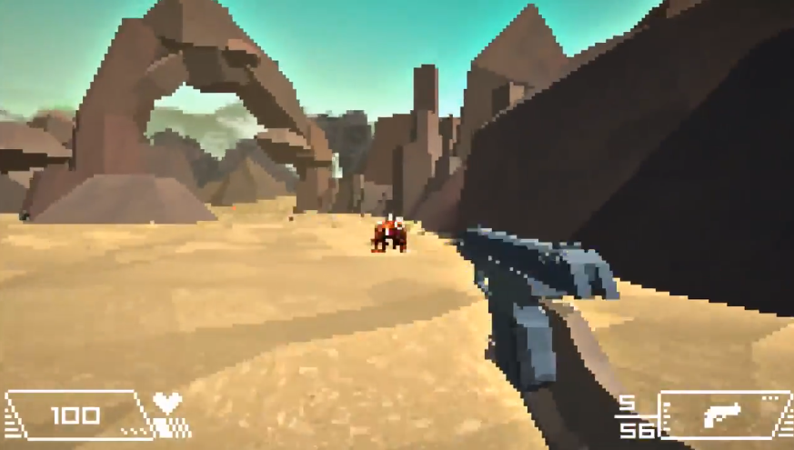

|  |
SummaryReclaim Earth is a pixelated sci-fi FPS, originally made for LOWREZJAM and expanded upon later. I worked with two other developers from the US on this project, which was my first experience working in a group. I did the programming and Game Design, Chase Bethea did all sound effects and Music for the game, James Brunner did the artwork and modelling for the game. Features
What I learnedThis game gave me experience working in a group, and specifically experience working in a remote group. It also gave me experience working a professional composer and artist. I gained valuable project management experience throughout the development of Reclaim Earth, I brought together all of the individual assets into the final project and implemented them with the mechanics. Links |